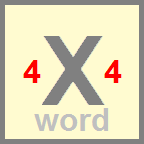

<!DOCTYPE HTML ><html style="height:100%;width:100%"><head ><title>Xword4x4</title>
<meta name = "viewport" content = "user-scalable=no,width=device-width" />
</head>
<body TOPMARGIN=0 LEFTMARGIN=0 MARGINHEIGHT=0 MARGINWIDTH=0 style="background-color:green;height:100%;width:100%" onLoad="doit()"> 

<script language="Javascript">
var thefullwidth=0
var thefullheight=0


var changingpage='xword4x4'

var cfpackage='Xword4x4'


var toptimer=null


function doit()
{

toptimer = setTimeout("loadinit()",2000);
}

var scalef
var screenwidth
var screenheight

function loadinit()
{
document.location.href="default.htm"
/*
screenwidth=window.innerWidth
screenheight=window.innerHeight

var overallwidthscale=screenwidth/190
var overallheightscale=screenheight/270
if (overallwidthscale<overallheightscale) {scalef=Math.floor(10*overallwidthscale)/10} else {scalef=Math.floor(10*overallheightscale)/10}
if (scalef<1.0) {scalef=1.0}


document.getElementById('maintable').innerHTML = '<style scoped type="text/css">      \nbody {color: white; background-color: black; font-family: sans-serif; font-size: '+(scalef*10)+'px; font-weight: normal; font-style: normal; text-align: left}      \nh1 {font-family: sans-serif; font-size: '+(scalef*10)+'px; font-weight: bold; font-style: normal; text-align: left} \nh2 {font-family: sans-serif; font-size: '+(scalef*10)+'px; font-weight: normal; font-style: italic; text-align: left} \np {font-family: sans-serif; font-size: '+(scalef*10)+'px; font-weight: normal; font-style: normal; text-align: left} \nli {font-family: sans-serif; font-size: '+(scalef*10)+'px; font-weight: normal; font-style: normal; text-align: left} \ntable {font-family: sans-serif; font-size: '+(scalef*10)+'px; font-weight: normal; font-style: normal; text-align: left} \ntd {font-family: sans-serif; font-size: '+(scalef*10)+'px; font-weight: normal; font-style: normal; } \ntextarea {font-family: sans-serif; font-size: '+(scalef*10)+'px; font-weight: normal; font-style: normal; overflow:hidden;} \ninput {font-family: sans-serif; font-size: '+(scalef*10)+'px; font-weight: normal; font-style: normal; }  \n * {-webkit-tap-highlight-color: rgba(0, 0, 0, 0);}\n</style> \n<table style="background-color:green"><tr><td valign=middle align=center><span style="color:silver;font-weight: bold; font-size: '+(scalef*20)+'px">Xword<sup>4x4</sup></span><br><br>Tap X to start<br><br><br><br>Press device Back to exit.<br><br><span style="color:silver">TopAccolades</span></td></tr></table>'

*/
}

function documentwrite(X)
{
document.write(X)
}

documentwrite('<table border=0 cellspacing=0 cellpadding=0 align=center valign=middle style="width:100%;height:100%;background-color:green;text-align:center;font-family:sans-serif" ><tr><td id="maintable" valign=middle align=center style="background-color:green"><table border=0 cellspacing=0 cellpadding=0 align=center valign=middle id="testsize" style="font-size:12px;width:50%;height:50%;text-align:center;color:purple" ><tr><td style="font-size:16px;text-align:center;color:purple" valign=middle><br><br></td></tr></table></td></tr></table>')

</script>
</body></html>